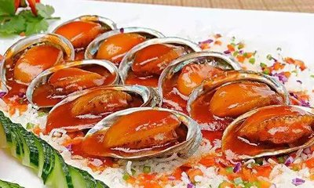
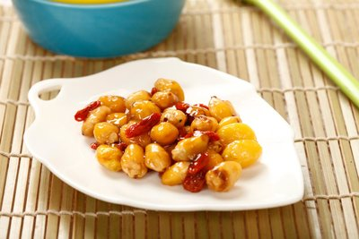

鲁菜
发展历史
鲁菜历史悠久，源远流长，是中国最早形成的菜系之一。春秋战国时期，鲁菜已崭露头角， 秦汉时期得到进一步发展，宋代已成为北方菜的代表。明清两代，鲁菜进入宫廷， 成为御膳支柱，被誉为"北方菜之宗"。鲁菜由济南菜、胶东菜和孔府菜三大分支组成， 其中孔府菜有"食不厌精，脍不厌细"的特点，是中国饮食文化的瑰宝。
特色
鲁菜以咸鲜纯正为核心，讲究"食不厌精，脍不厌细"。 注重原料质地优良，以盐提鲜，以汤壮鲜，调味讲求咸鲜纯正，突出本味。 烹制方法以爆、炒、烧、炸、烩、蒸、扒见长，注重火候掌握，讲究清脆嫩滑。 鲁菜精于制汤，十分讲究清汤、奶汤的调制，清浊分明，取其清鲜。 代表菜品有葱烧海参、九转大肠、糖醋鲤鱼等，体现了鲁菜雍容华贵、中正大气的特点。

你知道吗？
鲁菜对中国北方地区饮食文化影响深远，东北菜、津菜、晋菜等地方菜系都深受鲁菜影响， 甚至北京宫廷菜也是在鲁菜基础上发展演变而来，因此鲁菜被誉为"北方菜系之母"。
经典菜品


